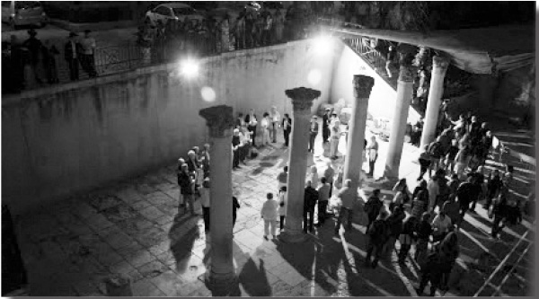

Geula Tour of Yerushalayim of Old
Doron , and his wife Ayelet, Oren run what they call “ Yerushalayim shel Maala – A Center for Tourists with Spirit and Neshama , ” through which they teach Judaism and Chassidus to thousands of tourists a year. * Join me as we take part in a tour !

Rechov Yaavetz 8 is where we were headed that fine morning in Yerushalayim. A spacious yard invites us to enter the “Merkaz Moshiach U’Geula – Midrechov Ben Yehuda.” You are invited to join us at the headquarters of “Yerushalayim shel Maala – A Center for Tourists with Spirit and Neshama.” If I wasn’t used to it from my previous visits, I would definitely have wondered about the odd combination; how does a Moshiach center and a tourist center go together?
On second thought, what could interest a tourist in Yerushalayim more than to experience the anticipation for the Geula, to ponder the glorious moments of our history when we had the Beis HaMikdash, and to feel how touring the alleyways of Yerushalayim not only reminds us of what we once had, but also lets us know what to expect any moment? There are homes and families in Yerushalayim that remain untouched by the years of galus, fast-paced technology and upheavals.
At the Moshiach and Geula Center we meet with R’ Doron and Ayelet Oren, a couple on shlichus who work together and separately with youth, running the yeshiva Oro shel Moshiach for baalei t’shuva and managing a dynamic Chabad house in one of the busiest areas of Yerushalayim. This is in addition to exciting work with tourists from Eretz Yisroel and abroad.
About a year ago, their place was nearly completely burned down, but following encouraging answers from the Rebbe in the Igros Kodesh, they decided to start over again in a much grander way. The impressive results were there in front of me. The place is spacious and aesthetically pleasing.
In the beis midrash I saw an astonishing sight. Together with talmidim from the yeshiva were sitting thirty eleventh graders from the Eshel HaNasi school in Beer Sheva, in pairs. I went over to one of them to ask what brought him here.
It turns out that their school arranges an annual three day trip to Yerushalayim. They can choose what they want to see and experience. Many of them choose to experience the artistic and musical scene and to come in contact with people of culture and the theater. Said Roi, “We chose to encounter Judaism in Yerushalayim and that is how we got to Yerushalayim shel Maala.”
Roi told me about the program of “Learning in Pairs” which he was participating in when I went over to him. The boys learn Gemara and Chassidus together for three days, and will experience all the tours and attractions of Yerushalayim shel Maala. At the end of a three day program like this last year, one of the students went to learn in yeshiva, directly from the kibbutz in the south of the country.
A group of women from WIZO (Women`s International Zionist Organization) are waiting for the shlucha in the nearby park. Mrs. Oren gets ready to go out and we joined her.
11 CHILDREN IN FORTY SQUARE METERS
The tour began in the Nachlaot neighborhood. The neighborhood has eighty shuls belonging to different segments of the frum world. This neighborhood, which is a collection of thirty-two old neighborhoods, was started by people from the old yishuv which is what the Jews who ventured beyond the walls of the Old City were called.
Many neighborhoods like Shaarei Chesed, which we walked through, are comprised of houses with tin roofs alongside beautiful homes. There is a variety of styles – renovated homes and ancient homes that have remained the same since they were built over a hundred years ago; spacious apartments and tiny ones; and the population consists of students as well as large families.
In the middle of the day we were hosted by a Lubavitcher family consisting of eleven children in a tiny home. There was a minimum of space but endless simcha radiating from every corner and from people’s faces. The group, numbering about twenty women, entered one by one and we followed them. We passed a minuscule kitchen with an industrial oven from which wafted the smell of fragrant challos.
The house was immaculate but the mother apologized for the chaos following the birth of her grandson. The new mother was resting there and the baby was sleeping peacefully in the living room. My children said the p’sukim, Shma Yisroel and Yechi with the baby and were given candy.
We were dumbfounded, the women tourists even more so. “How did you raise eleven children in a house like this?” they wanted to know. Ruti, the mother, smiled and said, “Hashem gives the strength. It’s all in your mind.” She explained that at night, the table in the living room is moved aside and the bed opens into four parts with two children sleeping on each section. The older ones are in yeshiva or seminary. As for the clothing, toys and everything else? Everything has its place and what there is no room for gets put up in the boidem (crawl space) located over the living room.
To me and to the visitors along with us, this was the highlight of the visit which had just begun. The stereotypes were shattered. Their view of ultra-Orthodox Judaism gained a different perspective. One of the women said that she had a stunning villa built and at a certain point, it turned out that unlike the original plans, half a room was missing. “We made a big deal out of this and felt it was the end of the world. Now I see how one can be content in two rooms and feel as though all the world is yours!”
Ruti smiled and dropped another bombshell. “I did not grow up in Yerushalayim, nor did I grow up in a large family. I grew up in Afula and was an only child in a huge house. My parents became baalei t’shuva through the family of R’ Shimon Rosenberg (father of slain Rivky Holtzberg), and I began hosting these tours four years ago, in memory of Gabi and Rivky Holtzberg, may Hashem avenge their blood.
“I won’t say it’s easy for me, but I thank G-d for what I have and don’t cry over what I don’t have. I try to do the maximum with what I’ve got, and boruch Hashem I am successful (she also runs a bakery out of her house). Boruch Hashem, I am always happy.”
It was time for a Challa Workshop. The table was moved to the center of the living room and each woman was given a piece of dough. As they kneaded and braided it, they learned the halachos of separating challah dough. At the end of the tour, the women come back and get the challa they made and which hopefully their husbands will cut the following night after making kiddush. After all, how can they leave with challa without deciding to make kiddush and have a Shabbos meal the next night?
Right before we left, Ruti told us about the feedback she gets. “One day, irreligious soldiers called me and said, ‘Ruti, we are on the base and we made challa and took off the dough and said the bracha just as you taught us.’ Someone else who was here decided to keep Shabbos. ‘You reminded me of my home when I was a child. I also grew up in a religious home and you reminded me of those holy moments of Shabbos. I want my children and grandchildren to experience Shabbos too.’”
EVERY CHABAD HOUSE CAN DEVELOP A TOURIST ANGLE
When we left the house, Mrs. Oren told us her thoughts about the tourist industry:
“Today, tourism is different than it used to be. Tourists go places, let’s say China, not in order to see the Great Wall, but to experience China. They want to visit with a Chinese family, eat Chinese food, talk with the locals, and get a sense of the mentality. This is what we provide tourists, the Chassidic feel of Yerushalayim.
“Chassidus teaches us not to look at what I’ve got to offer but at what the other person needs. Tour guides are constantly looking for something new and exciting. This is what we give them. Tourists who come our way not only see Yerushalayim, but get to experience it too.”
The Orens came up with a program that they call “Erev Chassidi b’Yerushalayim.” Unfortunately, I did not have the time to experience it, but I must say I am amazed by this idea which is ingenious in its simplicity. What happens on an Erev Chassidi? A special Chassidic farbrengen for groups of tourists. A mashpia comes, the tables are laden with refreshments including kugel and chulent, authentic Yerushalmi food, and he farbrengs with them. He tells them his life’s story, he says l’chaim with them, and they sing Chassidic songs together, sometimes accompanied by music.
I figure that some of you think this program doesn’t sound touristy, but the tourists and their guides love it. Every week there are two evenings of these farbrengens.
As we marvel at their creativity, Mrs. Oren modestly offers a disclaimer. “We have no special talents or abilities. We have the Rebbe MH”M who guides us, step by step, through the Igros Kodesh. All the creative ideas are a direct result of answers from the Rebbe.”
We continue the tour on the streets of Yerushalayim and Mrs. Oren is happy to supply us and the readers of Beis Moshiach with tourist trade secrets and tips for shluchim:
“Today, tourism is one of the most important aspects of the Israeli economy. Every local municipality would love to develop the tourist trade in their city. For some reason, many Chabad houses limit their work to the people of their city when they can reach thousands of tourists a year.
“Even in non-touristy places, a Chabad house can come up with a ‘pilot program’ which will offer visitors from outside the city a ‘Jewish experience,’ ‘Jewish music,’ a ‘Chassidic experience,’ ‘challa workshops,’ ‘meet a Jewish scribe,’ etc. By the way, sometimes you can do big things with a minimal outlay of money by simply letting people into the homes of Anash and letting them see a Chassidic home, authentic Jewish life, in the 21st century. For your information, we (the shluchim couple) would be happy to offer advice on this subject to any Chassid who is willing to open his house to tourist-shlichus. You wouldn’t believe how every home can turn into a story and every family into an experience.”
Miri, the tour guide who is listening to our conversation, said, “We once visited a family and a fascinating discussion ensued with the parents. The tourists could not believe how a family can live without a television. ‘So how do you occupy the children?’ they wondered. I’ll never forget how the woman pointed at one child who was reading a book, at two others who were working on a puzzle, a girl who was helping her in the kitchen, and another girl who was playing with a little brother.”
Our conversation was interrupted every time we passed by interesting sights in the neighborhoods. For example, we passed by a book gemach – a bookcase, mostly with books in English, with an open glass door. Whoever wants a book takes it and must remember to return it. On another corner, we saw a gemach for bread, which consisted of a plastic closet with bread and rolls that were donated by bakeries. People pass by, take bread and put the money it costs into a tz’daka pushka. The money collected in the pushka will be given to the needy.
The Lubavitcher guide spoke about how the neighborhood of Shaarei Chesed came to be. Its name suits it as is apparent in the severe enactments imposed on the residents of the neighborhood. For example, “No member may build protruding overhangs, build out into the street, cause any harm to the life of the neighborhood and its residents. No spilling garbage in a public place. To beware and not cause damage to others: no loud noises, no smoke fires, no maintaining a coop or pen. All water cisterns belong to all members of the neighborhood equally. Whoever maintains a quarrel and was warned three times and did not cease, shall leave the neighborhood …”
It is amazing to see how one experience is worth a thousand words. Go and explain to someone that there are concepts like the mitzva of g’milus chassadim that are real and practical. That people truly think about others and give of their time, energy and money, for others. Here, in one short visit, it all comes to life.
When we pass by interesting sights, like the sun dial on the wall (that is no longer working), people are surprised to see an ancient clock that used to serve the residents of the neighborhood, and they get to hear a Chassidic tale about the Alter Rebbe and a sun dial. When we pass by the home of the posek, Rabbi Shlomo Zalman Auerbach z’’l, or the tzaddik, R’ Aryeh Levin z”l, the tourists hear stories about them and their connections to the Rebbe.
We see cisterns of water that served the people of a courtyard and “wedding courtyards” where they set up chuppas on Friday afternoons (because of the poverty, so as to save on the expense of the wedding meal which was combined with the Friday night meal).
After visiting a home and being exposed to simple, religious lives, concepts like “being satisfied with little,” and “spiritual life versus material life,” and “who is rich – he who is happy with his lot,” take on new meaning. The women cannot help but contrast the showy weddings of today with the modest weddings of yesteryear.
One of the truly jarring moments on the tour is crossing Rechov Betzalel which separates between the two parts of Nachlaot, the religious part from the irreligious part. Allow me to quote one of the tourists from a previous tour, Mrs. Ronit Bar Ari, a senior manager in a marketing firm, under the heading “Yerushalayim of Yesteryear and Yerushalayim of Today – Two Houses Away.”
“When we left the small house and had merely crossed the street, we returned to the 21st century, to a busy street opposite a theater. Fifty meters away and two separate ways of life. I must say, it’s a jolting experience.”
It is amusing to hear the group of tourists discuss among themselves, “Why are the Lubavitchers in the less religious part of the neighborhood? Their Rebbe wants them not to separate themselves from the secular world but to work together and draw them close to Judaism. They even go on shlichus to places like India and Thailand where there are no Jews …”
“We have a horaa from the Rebbe that on each tour, we take the tourists to visit a Chabad mosad, so we always go into the Chabad house in Nachlaot that is run by R’ Sholom Ber Crombie, or the Moshiach Center on the Midrechov, or the Chabad shul,” said Mrs. Oren. “The cooperation and achdus among Anash is fantastic.” As she continues her talk to the tourists, we get to see the power of achdus.
Here, in this obviously Lubavitcher spot, is the place where the Rebbe takes center stage, where shlichus and mivtzaim are spoken about, as well as writing to the Rebbe.
“On Chanuka we have a program called Ner Mechaber (Connecting Lights) which is a menorah tour in the Old City or in old neighborhoods, in the course of which the group splits up and visits a Chabad, Yerushalmi family. They taste donuts or latkes, are present when the menorah is lit, hear the story of the miracles from the children, and get involved in a religious-Yerushalmi holiday experience.”
The idea was hatched one year when there was an outpouring of incitement against religious Jews on the usual issues. The Orens came up with a way of uniting the two sides in an experiential and meaningful way. The feedback was extremely positive.
So who says that you need to leave the house for mivtzaim? Sometimes, mivtzaim require opening your home and bringing in mekuravim.
We wanted to hear a story about the tours and heard two from Mrs. Oren:
“Last year, a day before Erev Yom Kippur, a woman by the name of Chani Seiner from Kibbutz Yahel called me. She didn’t ask whether she could come, but simply announced that she had to come to us for the Slichos tour that night. She was on her way (a four hour trip). Although we really had no more room, I couldn’t refuse her. She came and thoroughly enjoyed it. As a result, she comes every year on Chanuka and each time, she brings a group from the kibbutz. Her daughter, who is in high school, decided she wanted to do her term paper on the topic of religious women.
“In general,” said Mrs. Oren, “the bond created between the hosts and guests is wonderful. They exchange phone numbers or email addresses and keep in touch. It becomes like shluchim and mekuravim, a personal relationship. One year, we had a group that came and decided they did not want to split up, including for the Chanuka program when they are usually divided among families.
“Hashem helped and there was a family willing to host the entire group. Afterward, we saw the tremendous hashgacha pratis. When they went to this Lubavitcher family, it turned out that the father and the head of the group were good friends from the not so distant past. The lights of Chanuka reconnected them.
IN THEIR MERIT, WE WILL BE REDEEMED
Another interesting stop was 11 Rechov HaKalir, one street below that of the Chabad shul, the home of Zelda the poet. Zelda’s maiden name was Schneersohn (her married name, Mishkovsky) and she is the Rebbe’s first cousin. Her father, R’ Boruch Sholom Schneersohn, was the brother of R’ Levi Yitzchok, and her grandfather was the famous Chassid, Radatz (R’ Dovid Tzvi) Chein.
Her poems were, and still are, national treasures of Israeli literature because of their old-world Yerushalmi flavor. She writes free verse without rhyme and expresses her deep faith, which touches the hearts of religious and secular alike. In many of her poems she refers to Chassidic stories which she heard while growing up.
We did a short reading of her poetry and continued to the Weingrut home. They are Chabad Chassidim who live down the street. The mother is also a Chassidic writer.
As part of the unique and varied approach of Yerushalayim shel Maala, they also offer a “meet female artists” tour in which women tourists meet Chassidic-Yerushalmi creative women. Each one tells her story, brings the women or girls into her workshop, and gives a class in her area of artistic expertise whether drawing, composition, baking, or creative writing.
It’s a simple house, clean and orderly. On the wall is a picture of the Rebbe, on the table are refreshments, hot and cold drinks, and a pushka in the shape of the Beis HaMikdash. Shaul Yonasan and Ora welcome us warmly. She stayed with the women and he told me his thoughts about the tourists. He took out a letter that his wife received from a visitor who is not yet religious:
Hello,
I met you while on the Chanuka tour. You and your children listened as your husband lit the candle and the sparks that illuminated the room moved us all, particularly the things that you said. It showed me another perspective of the woman’s voice which senses, feels, and pulsates and which was foreign to me until then. I was happy to read the book and I continue to look through it, bit by bit. May my blessings accompany you.
The Weingrut’s home consists of four rooms. It is actually not their apartment but a “dirat hekdesh.” A dirat hekdesh is one of the foundational elements of the Shaarei Chesed neighborhood. Many houses were donated to the hekdesh fund for the express purpose of giving them to families to live in for a token fee, in exchange for fulfilling the will of the donor to have shiurim and do acts of chesed in these homes. The Weingruts dutifully fulfill this charge. One room is devoted to Torah study, where R’ Shaul Yonasan teaches grooms before they marry and Ora teaches brides.
Mrs. Weingrut tells the women about the books she has written while raising six children. Ohr HaLevana (The Light of the Moon) is poetry about women’s service of Hashem according to the months of the year, and Ohr Shivas Ha’yamim (The Light of the Seven Days) is on the parsha. Towards the end, she read to them one of her poems, “In their Merit, we will be Redeemed in the Future.”
The women are very impressed; the words of the poem touch them. They go over to thank their hostess and, at her request, they put a coin in the pushka “to hasten the Geula and the building of the Beis HaMikdash speedily in our days.” One of the young women went over to Mrs. Weingrut and said, “I am about to get married. Would you be willing to teach me for my wedding?”
GEULA CREATIVITY
The tour ends. Noontime approaches and we still did not experience even half of what Yerushalayim shel Maala does. The group of tourists returns to the buses while Mrs. Oren quickly goes to pick up her children from school.
We return to headquarters, the Moshiach and Geula Center. We want to hear when it all began and about the couple’s Geula plans and to see how every detail of the artist trade and tourism can be enlisted in the service of the Geula.
At the Moshiach Center we meet Doron again. He is busy talking to top flight artists about starting an impressive Visitors Center within the Moshiach Center. Some of the details of the room are already prepared and Doron tells us about some of them.
“The purpose of the Visitors Center is to utilize artistic mediums to provide a visitor with the basics of Torah, the Creation and its purpose, the Geula and its prophecies. On the one hand it needs to be absorbed within a few minutes; on the other hand, we want it to make a lasting impact.”
There on the floor are strips of stained glass. Oren points and explains how each set of stained glass depicts another aspect of creation: the inanimate, vegetation, animals, humans. Over them will be a window with special lighting that will express the idea of the neshama which is above everything.
On another side, the practical mitzvos will be artistically displayed, through which a person connects with his neshama, connecting it to Hashem, and by doing so with all ten s’firos of the soul, achieves Geula.
On the Geula Wall, a wall built in a circular shape, there are sketches already. From the finished parts we get a sense of the message. Yerushalayim is spread out at the bottom of the wall and heavenly clouds are bringing the Beis HaMikdash and 770 to Yerushalayim. Every group of tourists will be assigned a guide who will explain the ideas behind the art. Here, facing the wall of Geula, will be the time and place to answer the question: What is the connection between the Rebbe’s shul and the depiction of the moment of Redemption?
In this Visitors Center there will be a large plasma screen with video segments of the Rebbe, his work in the world, and the fulfillment of the prophecies of Geula in the world. There will be a table and chairs to write to the Rebbe through the Igros Kodesh.
As we spoke, three talmidim from the yeshiva went out to change places with the group that is manning the yeshiva’s t’fillin stand. Just about every visitor to the Midrechov comes across the t’fillin stand. One of the bachurim told me about a wonderful initiative that came through an answer from the Rebbe in the Igros Kodesh:
“Thanks to the light rail train, a lot of businesses in Yerushalayim, particularly on the Midrechov, were adversely affected. Until now, you could drive your car everywhere, but now it’s limited. We spoke to many business owners on the Midrechov with whom we have developed a personal relationship through the t’fillin stand, and they told us about this. We decided to write to the Rebbe and to ask for a bracha for them. The answer we opened to was addressed to R’ Eliezerov and it said that for success in business and parnasa the Mishnayos should be divided among the balabatim.
“We went to all the business owners and told them the Rebbe’s answer and suggested that they learn one Mishna a day in a structured cycle so that we would finish all the Mishnayos in a short time. There was a tremendous response. Since then, the storeowners on the Midrechov learn a Mishna a day, some of them in depth and some of them by heart. Boruch Hashem, the business situation improved but more importantly, they feel very happy and satisfied with their accomplishment.”
More and more people walk into the Center every minute. One wants to put on t’fillin, another wants to open a Jewish book or to sit and learn with a talmid from the yeshiva, another one wants to write to the Rebbe.
The office of Yerushalayim shel Maala is in one of the rooms of the Center. From here, emails are sent to thousands of people who have passed through the place and want to remain in touch. This is where the booking of tours takes place and where sichos, letters and horaos of the Rebbe are translated into action.
On the desk are many thank you letters alongside formal requests for organized tours from community centers, travel agencies, schools, Chabad organizations, etc. The phones don’t stop ringing with tour guides wanting to book a tour.
e went back out, this time, for a “Theatrical Bar Mitzva Tour.” Honestly, I did not know what that means either. If I understood it correctly, it’s a tour in which the guide is an actor who plays different roles according to the time, place and message he wants to convey. It’s a simple and ingenious idea. Boys flock to Yerushalayim to celebrate their bar mitzva with their families. All the ceremonial customs, like the throwing of candies, are done, but if the boy did not undergo proper preparation, he can miss out on the highlight of the occasion, taking on the yoke of mitzvos.
The guide-actor on this particular tour was a baal t’shuva and a real character named Chaviv. He’s a talented and charming guy. He played numerous roles and was hilarious too. To my surprise, when he introduced himself by name the crowd became excited. Apparently, Chaviv was a known actor in the not-frum world and he still teaches drama.
Chaviv leads the excited family through the streets of the Old City. We will go to four places during the tour. At the first stop, near the Sephardic shuls, Chaviv plays a Sephardic boy celebrating his bar mitzva. In a delightful way and with plenty of humor, he dramatizes the customs of those holy communities. In first person, he describes the bar mitzva they made for him in Casablanca, about the help, solidarity and brotherhood that prevailed among the families before the celebration. In other locations, he tells a Jewish or Chassidic story that happened to him, supposedly, when he was a boy.
When we arrived at the Tzemach Tzedek shul in the Old City, he puts on old world Chassidic garb and plays a Chassidishe boy in Russia who is walking to his Rebbe where his bar mitzva will be celebrated. Chaviv conveys the excitement, the significance, and the privilege of taking on the yoke of mitzvos.
I found the stop at Kikar Battei Machseh to be the most gripping of all. While wearing a visor cap and holding a baseball bat, he acted the role of an American kid, sensitive, spoiled, and smart. He acted out the story of the bar mitzva boy who had yechidus with the Rebbe in the course of which the Rebbe taught him a lesson in avodas Hashem from the game of baseball and how this later helped him. With incredible skill, Chaviv taught the message “we must always choose good.”
When we arrived at the concourse outside King David’s tomb, as everyone sat on the stairs the actor played the role of a Yerushalmi boy from the Old City of yesteryear. The tour group is hypnotized by his description of a bar mitzva celebration back then. They were not magnificent affairs. The emphasis was on the preparation, the drasha and the Torah. Nothing was lacking and the joy was tremendous.
After this, the bar mitzva boy and his family go to the Kosel with song and dance. Now, he and his family know what to pray for.
As we walked on the Bar Mitzva Tour, a group of bas mitzva girls walked by. They passed the same places we went to but in a different order, for tznius purposes. The girls’ tour is called B’Ikvos Nashim and the messages are tailored to the audience. At each stop there is a topic and personality, starting with Chana, the mother of Shmuel, then Ruth, Chana and her seven sons, Suleika, Rebbetzin Menucha Rochel, and Rebbetzin Chaya Mushka.
Upon our return to the Moshiach Center, exhausted, we see a full moon overhead that illuminates the streets. To our surprise, it looks as the day just began at the Center. In the yard a sheva brachos is taking place and the main hall is already set up for an Erev Chassidi with the mashpia, R’ Zalman Notik.
We leave just as dozens of people walk in. When they leave for a night tour after a farbrengen with Chassidic stories, niggunim and l’chaim, they will certainly talk differently; Geula talk, no doubt.
On our way out we hear Chassidic music playing, a Geula song, and I think how this place is so ready for the Geula. We are ready and waiting.
Mmarad. "Geula Tour of Yerushalayim of Old." Beis Moshiach, no. 892 (August 13, 2013).